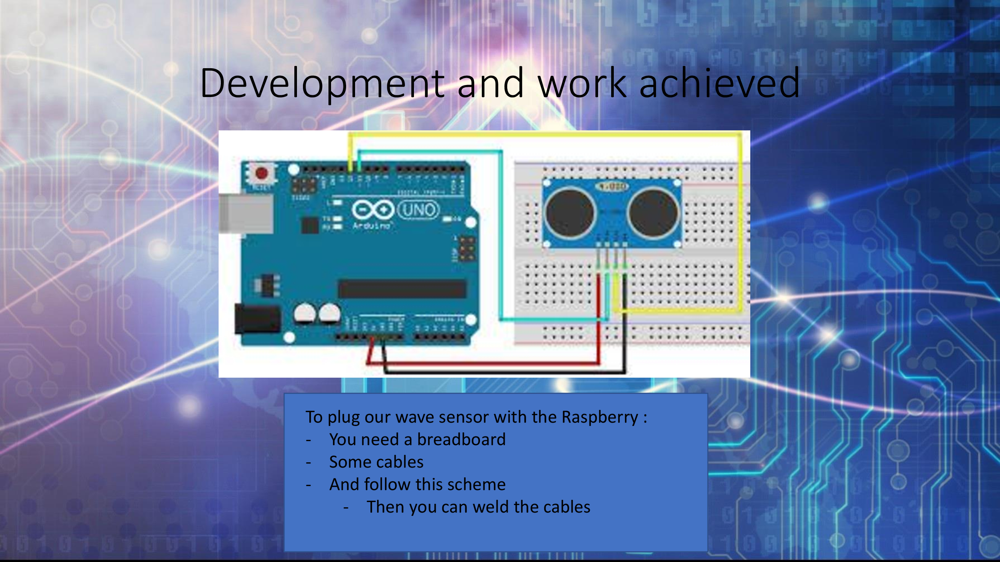
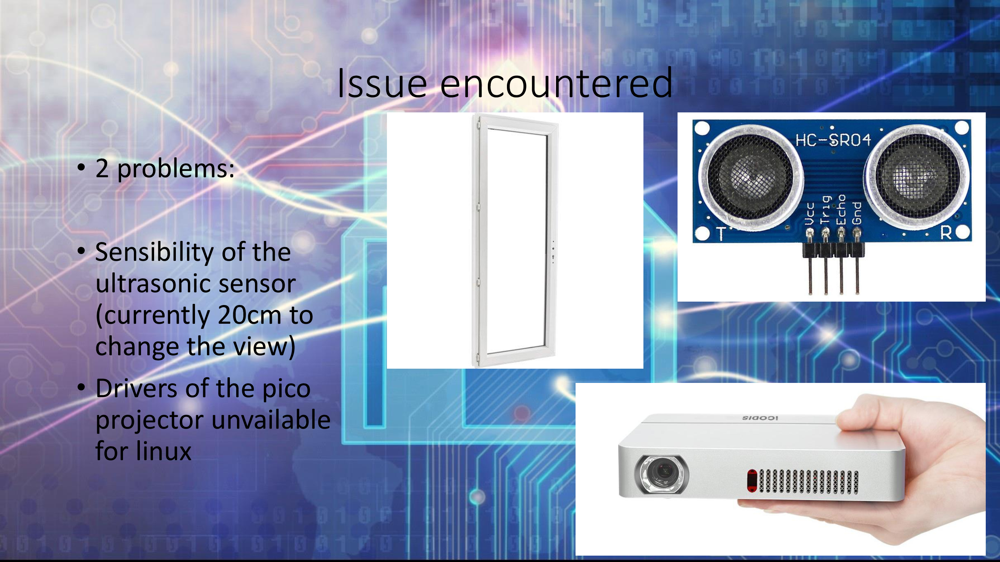
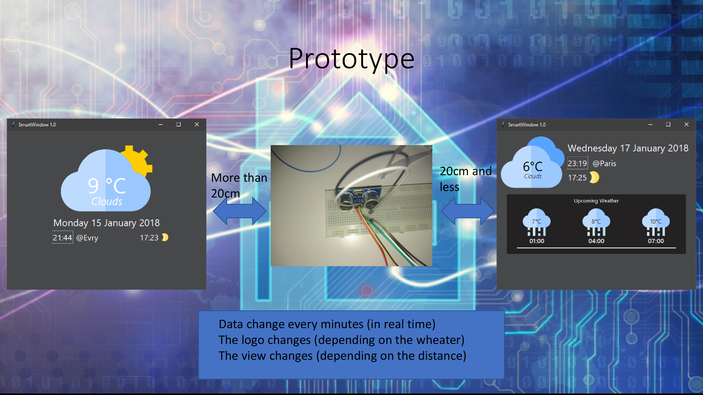

Windeo – Une fenêtre connectée pour la météo
Un projet étudiant IoT qui transforme votre fenêtre en assistant météo passif
Contexte & Défis
Windeo est un projet IoT pensé pour projeter des informations météo et des recommandations vestimentaires directement sur une fenêtre, sans interaction utilisateur. Le défi principal était de rendre ces informations lisibles en toute circonstance, notamment en pleine lumière naturelle.
Objectifs
- Afficher les données météo sans interaction utilisateur
- Projeter les infos sur une fenêtre via Raspberry Pi + Arduino
- Proposer des recommandations vestimentaires claires
- Assurer la lisibilité même à distance ou en plein jour
Ma contribution
J’ai assuré la partie UX design de bout en bout : recherche utilisateur, interviews, création de personas, parcours utilisateur, maquettes et suivi de l’intégration avec les développeurs.
Démarche UX
- Entretiens avec étudiants et enseignants
- Observation d’usages au quotidien
- Création de 2 personas cibles
- Parcours utilisateur orienté “non-interactif”
- Tests de lisibilité en condition réelle
Design final

Problème identifié

Design de l’interface

Développement technique

Contraintes rencontrées

Prototype fonctionnel

Rendu final projeté